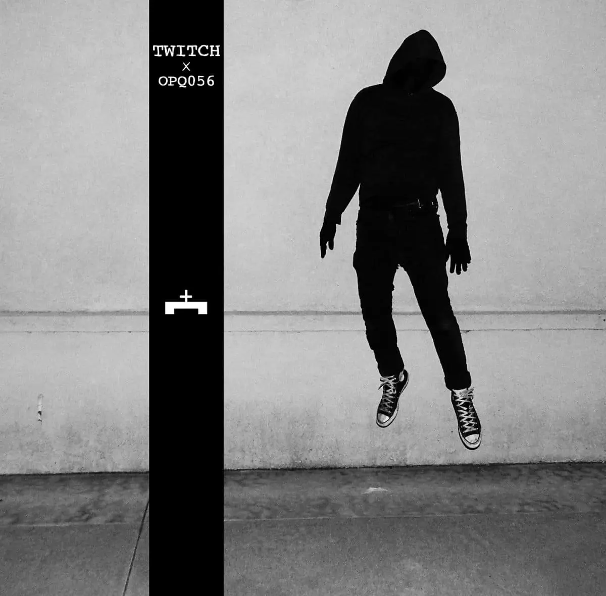
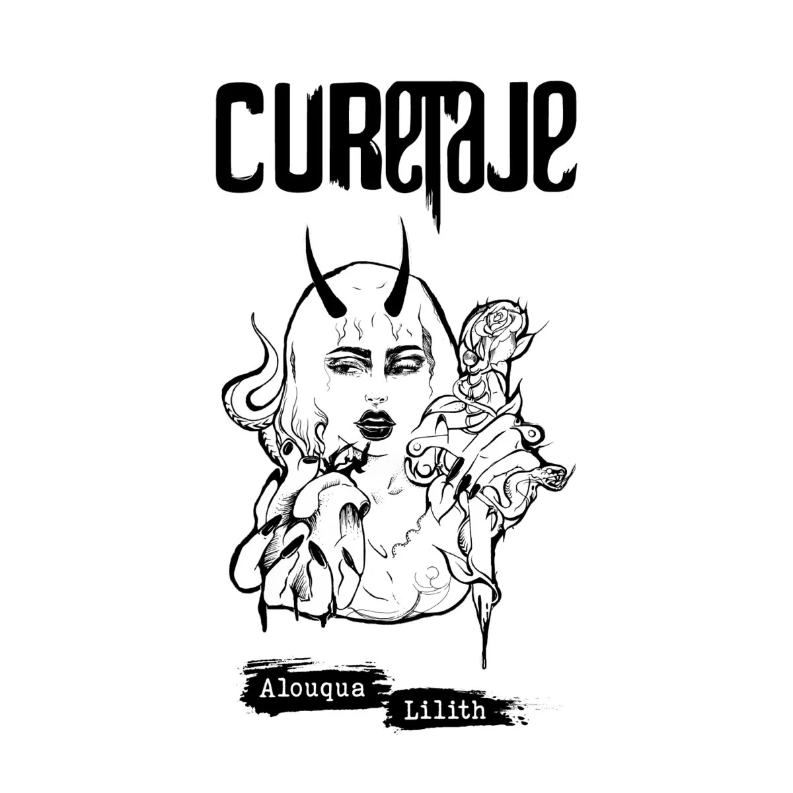
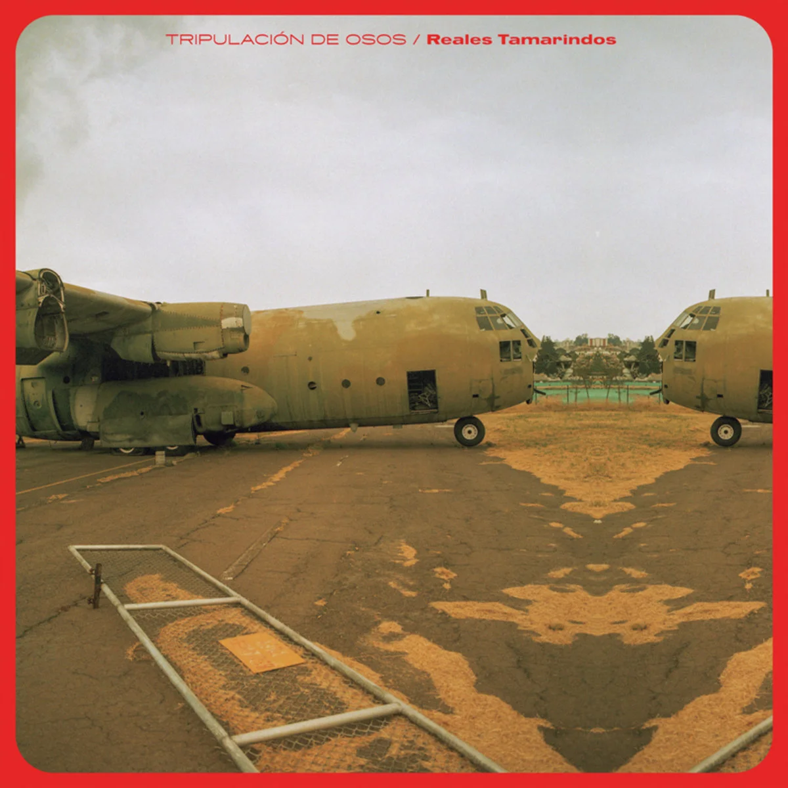
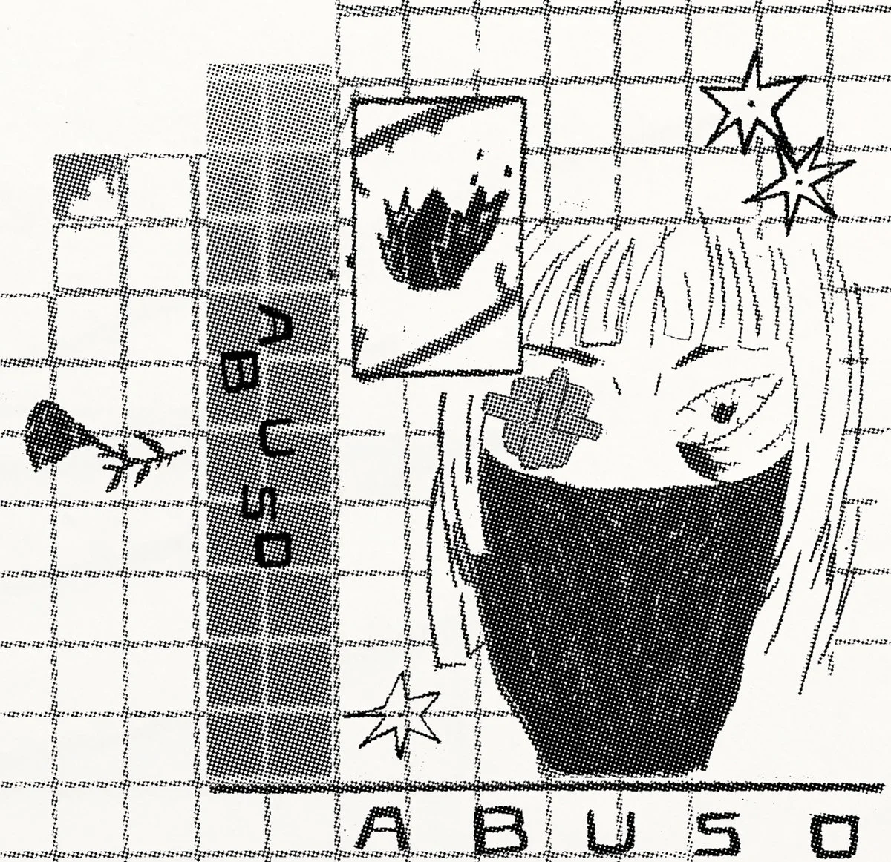
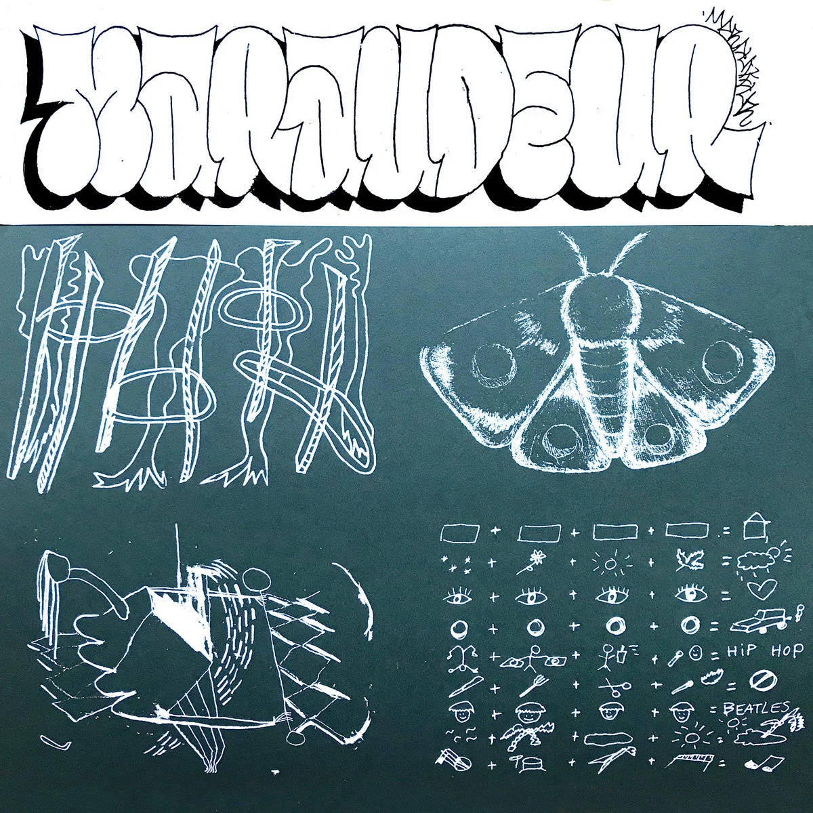
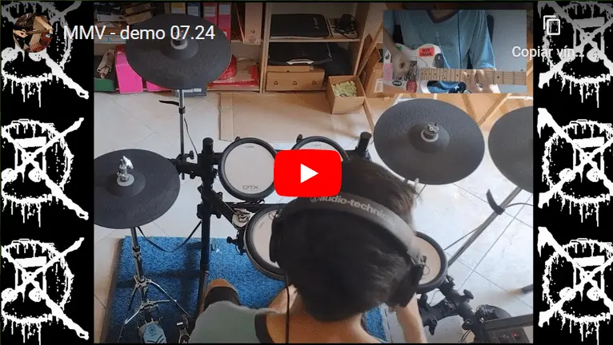
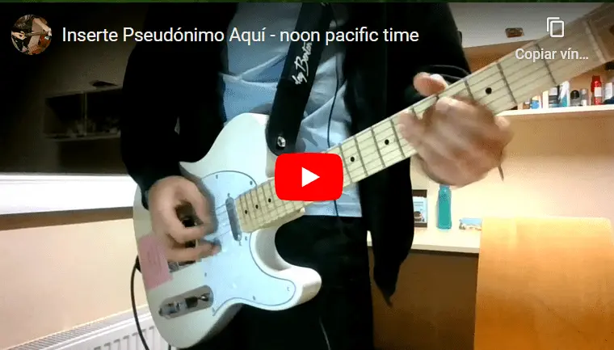

Sick fastcore from LA, full album length is barely 2:45!
/recommended


Raw grind-crust-death from Guayakill, Ecuador!

This is what drinking on an afternoon on a rooftop in Ecuador sounds like.

Angry & raw HC-punk/d-beat from Colombia.

Weird AF band with members spread around Europe. They are just as weird live.
/my-projects

Instrumental track recorded DIY in Turin, 07/2024.
With MMV I'm trying to craft a mix of d-beat/crust-punk & DSBM, but this one came out as more of a hardcore tune with some black metal elements. I'm still working on the sound.
Listen to more stuff from MMV on Soundcloud!

Recorded in Manta, Ecuador, 01/2024.
Masakrador is a goregrind/grindcore duo formed with my cousin back at home.
Check out our single on Spotify!

Recorded in Tallinn, Estonia (TalTech Campus), 12/2020.
{Inserte Pseudónimo Aquí} is my very first personal music project, started in 2013.
Initially influenced more than anything by Nirvana (still my favorite band ever), the music evolved over the years together with my own taste, passing through periods of heavy obsession with artists like The Pixies, Sudakaya, Incubus, St. Vincent, Молчат Дома and Abuso.
Check my Soundcloud for more!